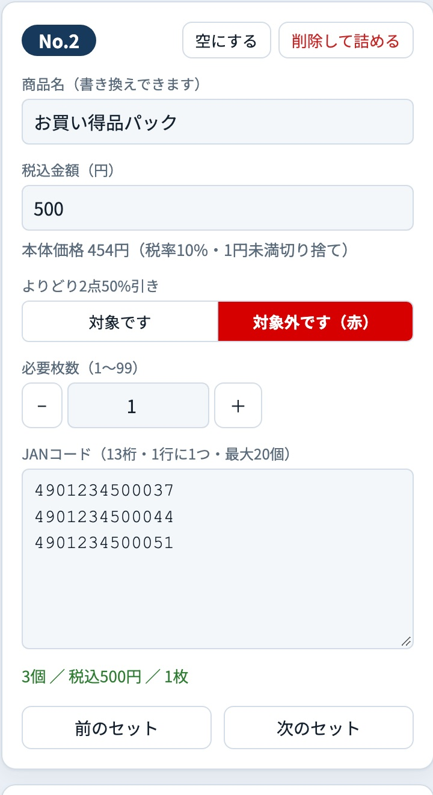

処分品セット レジ指示カード（A4）
使い方マニュアル
パソコンに慣れていない方でも、この順番どおりに進めればカードを印刷できます。
このツールでできること
処分品を袋に詰めて売るときに、レジ係へ渡す「指示カード」を作って印刷します。袋1つにカード1枚です。レジ係はカードに書いてある順番どおりにレジを打つだけで、袋の会計ができます。
印刷されるカードの例（実際の大きさは 横10cm）
作業は3ステップです
ステップ1袋の中身を
入力する金額と商品のJAN
（▶ 3ページ）
▶
ステップ2A4の紙に
印刷する「印刷」ボタンから
（▶ 4ページ）
▶
ステップ3切って
袋に付ける点線で切り分ける
（▶ 5ページ）
もくじ
- ツールを開く・画面の見かた …… 2
- 袋の中身を入力する …… 3
- 印刷する …… 4
- カードの見かた・レジの打ち方 …… 5
- 便利な設定 …… 6
- 困ったとき（Q&A） …… 6
1ツールを開く・画面の見かた
ツールを開く
- 1
ファイル jan-card-print.html を探します（デスクトップや共有フォルダなど、置いてある場所）。
- 2
ファイルをダブルクリックします。Google Chrome（グーグル クローム）で開けば準備完了です。
- 3
Chrome 以外（Safari や Edge など）で開いたときは、ファイルを右クリック →「このアプリケーションで開く」（Windowsは「プログラムから開く」）→「Google Chrome」を選びます。
入力は自動で保存されます
保存ボタンはありません。入力した内容は、
そのパソコンのChromeに自動で残ります。次に開いたときも続きから作業できます。
※ 別のパソコンや別のブラウザには引き継がれません。はじめて使うとき
最初は練習用のサンプルが入っています。本番の入力の前に、右上の
全削除 を
2回押して消してください（1回目は「もう一度で全削除」と表示されます）。
画面の見かた
| A | マニュアル このマニュアルを開きます。使い方 短い説明、サンプル 練習用データを入れる、全削除 入力をすべて消す（2回押す） |
|---|
| B | 印刷 入力が終わったら押します（▶ 4ページ） |
|---|
| C | 印刷される紙のようす（プレビュー）。入力するとすぐ変わります。カードをクリックすると、そのカードを右側で直せます。紙が2枚以上のときは「次の用紙 ▶」で切り替えます。 |
|---|
| D | 編集欄。袋1つ分（1セット）の金額やJANを入力します（▶ 3ページ） |
|---|
| E | セット一覧。入力した袋の一覧です。押すとそのセットを直せます。 |
|---|
2袋の中身を入力する
右側の編集欄に、袋1つ分（1セット）ずつ入力します。左上の「No.1」が、いま入力しているセットの番号です。

1
2
3
4
5
6
7
- 1
商品名
最初は「お買い得品パック」と入っています。そのままでも大丈夫です。
- 2
税込金額（円）
袋の売値を税込みで、数字だけ入れます（例：500）。本体価格は自動で計算されます。
- 3
よりどり2点50%引き
対象です か 対象外です（赤） を必ず押します。選ばないと印刷できません。
- 4
必要枚数
同じ中身の袋をいくつ作るか。－ ＋ で変えられます（1〜99枚）。
- 5
JANコード
袋に入れる商品のバーコードの数字（13けた）。入力欄をクリックしてから、バーコードスキャナで商品を1つずつ読みます。読むたびに自動で次の行に進みます（最大20個）。
- 6
確認
緑の文字で「3個 ／ 税込500円 ／ 1枚」のように出れば入力完了。赤い文字が出たら直します（▶ 6ページ）。
- 7
次の袋へ
＋ 次のセットを追加 を押して、1〜6をくり返します。
同じ商品が2つ入る袋は？
その商品を
2回読んでください。カードには「同じ商品 1/2」「2/2」の印が付き、レジ係が読み忘れないようにします。個数も自動で数えます。
スキャナがないときは
商品のバーコードの下の13けたの数字を、キーボードで入力して
Enter キーを押します。12けたまで入れれば、最後の1けたは自動で付きます。
直したいとき：一覧のセットを押す／プレビューのカードをクリック。空にする はそのセットの入力を消す、削除して詰める はセットごと消して番号を詰めます。
3印刷する
手順1 確認画面で最後のチェック
右上の 印刷 を押すと、確認画面が出ます。
- 1
全部まとめて「対象」または「対象外」にするボタン
- 2
袋ごとの 対象／対象外。ここでも変えられます
- 3
カードの枚数
- 4
カードの合計枚数と、使うA4用紙の枚数。紙を用意しておきます
- 5
よければ 印刷する を押します
手順2 Chromeの印刷画面の設定（とても大事）
Chromeの印刷画面が出たら、次の3つを確かめます。違うとカードの大きさがずれて、レジでバーコードが読めないことがあります。
印刷 （画面のイメージ）
送信先お店のプリンタ
ページすべて
詳細設定 ▼1
用紙サイズA4
余白なし2
倍率デフォルト（100%）3
オプションヘッダーとフッター4
キャンセル印刷
- 1
「詳細設定」を押して開きます。
- 2
余白を「なし」にします。
- 3
倍率を「デフォルト」または「カスタム 100」にします。「ページに合わせる」は使いません。
- 4
ヘッダーとフッターのチェックを外します（□ 空の状態）。
- 5
青い 印刷 ボタンを押します。
はじめての日は「試し刷り」を
最初に1枚だけ印刷して、①カードの横幅が
10cmあるか（定規で測る）、②レジのスキャナでバーコードが読めるか、を確かめてから残りを印刷してください。
設定は次から覚えていることが多いですが、プリンタを変えたときは確かめ直します。4カードの見かた・レジの打ち方
切って袋に付ける
A4の紙に、カードが2列で並んで印刷されます。カードの外側の線（点線）で切り、袋に付けます（テープで貼る・袋に入れるなど、お店のやり方で）。
※ 点線を印刷しない設定にもできます（▶ 6ページ）。
カードの見かた
1
2
3
4
5
| 1 | 商品名 |
|---|
| 2 | よりどり2点50%引きの 対象（白地に黒枠）／対象外（赤地に白文字） |
|---|
| 3 | 袋の合計金額（税込）。下の小さい字は本体価格（税10%） |
|---|
| 4 | 袋の中の商品のバーコード（2列）。同じ商品が入っているときは「同じ商品 1/2」の印付き |
|---|
| 5 | レジ操作：レジ係がこの順番で打ちます（下の説明） |
|---|
レジ係の打ち方
カードのいちばん下の「レジ操作」のとおりに、左から順番に打ちます。
3▶セット▶500円▶金額▶全部スキャン
- 1
袋の個数（例：3）を打ち、レジの セット キーを押す
- 2
袋の税込金額（例：500）を打ち、レジの 金額 キーを押す
- 3
カードのバーコードを全部スキャンする（「同じ商品」の印があるものは、その数だけ読む）
※ カードの黒いキー（セット・金額）は、レジのキーの名前です。お店のレジのキーの位置は、事前にレジ担当の方に確認してください。
5便利な設定
右側のいちばん下「用紙・カードの設定」を押すと開きます。ふだんは変えなくて大丈夫です。
| 開始位置 | 前回の紙の余ったところに印刷したいとき、使用済みの枚数を入れます。例：「2」なら、左上から2枚分を空けて3枚目の位置から印刷します。 |
|---|
| 枠線（画面／印刷） | カードを切るための点線。「印刷」にチェックを入れると紙にも点線が出ます。 |
|---|
| 用紙を節約 | 高さの近いカードを横に並べ、紙の枚数を減らします（はじめからオン）。 |
|---|
| 全カードをそろえる | すべてのカードを同じ高さにします。切りやすくなりますが、紙は増えます。 |
|---|
| カードの高さ | いちばん低いカードの高さ（50／55／57mm）。商品が多いカードは自動で伸びます。 |
|---|
| バーの高さ・太さ | バーコードの大きさ。レジで読みにくいときだけ変えます（標準：6mm・100%）。 |
|---|
6困ったとき（Q&A）
赤い文字が出ている例（このセットは印刷されません）
| 赤い文字 | 直し方 |
|---|
| チェックデジット違い | 数字の打ちまちがいか読みまちがい。その行を消して読み直す |
| 8桁（短縮JAN）は使えません | 8けたのバーコードは使えません。13けたのJANを入れる |
| ◯桁です（JANは13桁） | けた数が違います。数字を確かめる |
| 金額が未入力です | 税込金額を入れる |
| ◯個は入りません | 1袋は20個まで。袋を分ける |
- 「印刷する」を押しても印刷画面が出ない
- 確認画面の下に「よりどりが未選択」と出ていないか見てください。対象／対象外を全部選ぶと印刷できます。
- カードが小さい・大きい、バーコードがレジで読めない
- Chromeの印刷画面で、倍率「100%（デフォルト）」・余白「なし」になっているか確かめてください（▶ 4ページ）。
- 紙の上か下に日付やファイル名が印刷される
- 印刷画面の「ヘッダーとフッター」のチェックを外してください。
- 入力した内容が消えた
- 別のパソコン・別のブラウザで開いていませんか。入力はそのパソコンのChromeにだけ残ります。Chromeの「閲覧履歴データの削除」をしたときも消えます。
- まちがえて全部消してしまった
- 元に戻すことはできません。もう一度入力してください。